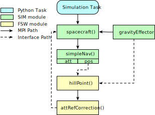
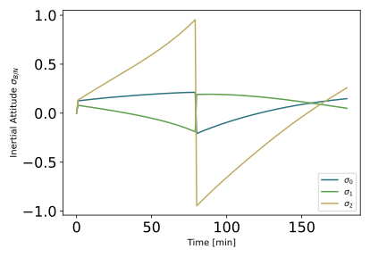

scenarioAttitudePrescribed¶
Overview¶
Discusses how to directly command the spacecraft orientation using the optional AttRefMsgPayload input message. The benefit here is that the attitude dynamics is over-written to prescribe the orientation to follow the given input message. This can lead to must faster simulation times as larger integration time steps can be taken.
The script is found in the folder basilisk/examples and executed by using:
python3 scenarioAttitudePrescribed.py
The simulation layout is shown in the following illustration. A single simulation process is created which contains both the spacecraft simulation modules, as well as the Flight Software (FSW) algorithm modules.
In this scenario we use Module: attRefCorrection to change the Hill pointing reference message to align any desired set of body axes with the Hill frame. The resulting output message is connected to the optional Module: spacecraft attitude input message to drive this orientation.
Illustration of Simulation Results¶
show_plots = True, useAltBodyFrame = False
The default scenario shown has the useAltBodyFrame flag turned off. This means that we seek
to align the body frame B with the Hill reference frame \(\cal R\).
show_plots = True, useAltBodyFrame = True
Here we apply a 90 degree rotation from the body frame B to the corrected body frame \(B_c\) and the spacecraft is prescribed to have a different orientation relative to the Hill frame.
- scenarioAttitudePrescribed.run(show_plots, useAltBodyFrame)[source]¶
The scenarios can be run with the followings setups parameters:
- Parameters
show_plots (bool) – Determines if the script should display plots
useAltBodyFrame (bool) – Specify if the alternate body frame should be aligned with Hill frame.